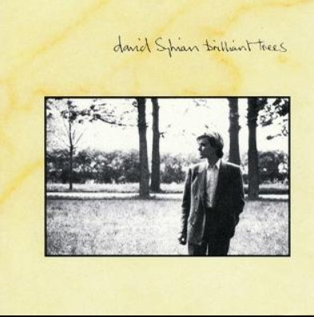

David Sylvian
Brilliant Trees (1984)

Brilliant Trees (1984) was the first solo album by David Sylvian, the former frontman of Japan. Recorded primarily at the legendary Hansa Studios in Berlin, with additional overdubs later completed at The Church Studios, the album was produced by Steve Nye, who had already worked with Sylvian on Japan's records and had produced XTC's excellent Mummer the previous year.
The album features a select group of collaborators, ranging from Steve Jansen and Richard Barbieri of Japan to Ryuichi Sakamoto, with whom Sylvian had already collaborated on projects such as “Forbidden Colours” for the film Merry Christmas, Mr. Lawrence. The lineup also includes John Hassell and Mark Isham, whose contributions bring a distinctive world music dimension to the record, as well as the excellent guitarist Phil Palmer. However, much of the credit for the album's sonic treatment and almost ambient atmosphere belongs to Holger Czukay of Can.
Without drawing direct comparisons, Czukay's role here bears some resemblance to Brian Eno's contribution to U2: not only through his influence and musical guidance, but also by encouraging Sylvian to push further into experimental territory. Some fascinating behind-the-scenes footage of the recording sessions, available on YouTube and originally captured on home camcorders, offers a glimpse into this creative process.
Watching Czukay use an IBM Dictaphone, a tape-based recording device originally designed for secretarial work, to manipulate pitch and playback speed and construct the beautiful sonic pads on the closing title track is particularly revealing. Equally fascinating is the moment when Sylvian passes simple chord structures to Sakamoto, who sits down at the piano and transforms them into something far more sophisticated within seconds. These glimpses into the creative process are absolutely worth watching.
Returning to the album itself, its stylistic range is striking, moving from the semi-funk groove of “Pulling Punches” to the introspective, jazz-inflected “The Ink in the Well,” with its characteristic double bass and brushed drums. Each track establishes its own identity without compromising the album's overall coherence.
Both acoustic and electric guitars are used with restraint, providing just the right amount of texture to support each song's atmosphere without demanding too much attention. Even on “Red Guitar,” the track most directly associated with the instrument, the spotlight falls not on a guitar solo but on Mark Isham's trumpet. It is a subtle yet telling example of Sylvian's approach to arrangement.
“Backwaters,” the penultimate track, offers a glimpse of what would emerge more fully in later works such as Words with the Shaman and Gone to Earth, particularly the latter's second disc. Here, Sylvian moves toward a more experimental language, exploring textures, unconventional percussion, and a less conventional approach to song structure.
In short, Brilliant Trees is an outstanding solo debut, capturing an artist eager to shed the more overt pop and new wave elements of Japan. It also marks the starting point of a solo career that, to this day, deserves to be explored, analyzed, and appreciated with close attention. Sylvian is not an artist who releases albums simply for the sake of it. If this record resonates with you, I suspect his subsequent work will offer plenty more to discover.
One final note: I don't usually focus much on lyrics in these reviews, preferring to concentrate on the music and production. However, for those interested in Sylvian's literary side, a line such as “within each lesson lies the price to learn,” from the title track, is reason enough to pay closer attention to his writing.
Conclusion
Brilliant Trees is far more than a successful transition away from Japan's pop-oriented sound. It establishes the foundations of Sylvian's distinctive musical identity, balancing sophisticated songwriting with atmospheric production and a willingness to embrace experimentation. Steve Nye's production and Holger Czukay's sonic contributions help shape a record that remains remarkably rich in detail.
For listeners interested in production, arrangement, and the meeting point between art pop, jazz, and ambient music, this album rewards repeated listening. Sylvian's subsequent discography is well worth exploring, and this is an exceptional place to begin.
My rating: 9.5 / 10
View comments (Loading...)
Loading comments...